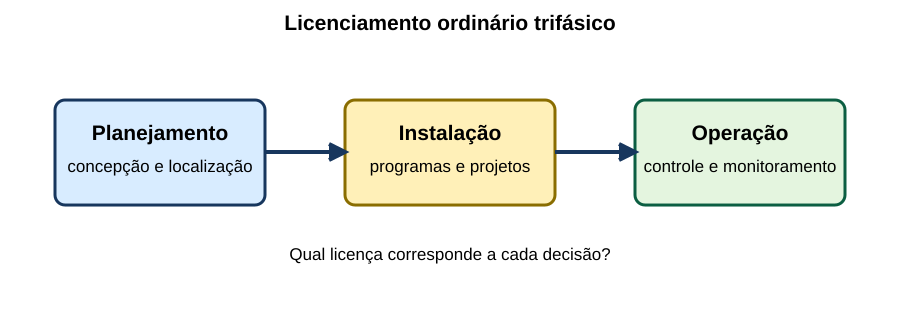
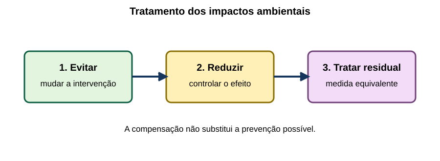
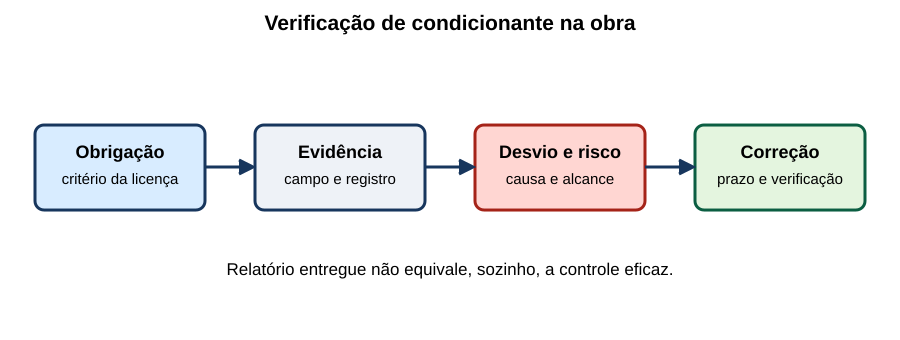

Licenciamento Ambiental & Segurança em Obras
15 questões autorais calibradas pelo padrão IDECAN • Bloco Bronze • legislação atualizada
| Questão 01 | Lei nº 15.190/2025 • LP, LI e LO |
Uma empresa pretende implantar uma subestação e a autoridade licenciadora adotou o procedimento ordinário trifásico. Considerando o esquema, assinale a sequência compatível com a função de cada licença.

A) A LP autoriza a obra; a LI aprova apenas a localização; e a LO encerra o monitoramento.
B) A LP examina a viabilidade; a LI permite implantar; e a LO permite operar sob controles e condicionantes.
C) A LP autoriza a operação; a LI regulariza passivo; e a LO substitui as autorizações setoriais.
D) A LP aprova o projeto executivo; a LI libera a operação; e a LO define somente a concepção.
Gabarito Comentado: Alternativa B
No procedimento trifásico, a LP atua no planejamento e na viabilidade da concepção e da localização; a LI permite a instalação e aprova programas e projetos de controle; a LO permite a operação e disciplina controle, monitoramento e condicionantes.
Análise das armadilhas:Trocar a finalidade das licenças ou imaginar que a LO elimina acompanhamento ambiental posterior.Como pensar nesta questão:Associe cada licença a uma pergunta: onde e se é viável; como será implantado; em quais condições poderá operar.
| Questão 02 | Sujeição ao Licenciamento • Autorizações Conexas |
Durante o planejamento de uma linha de distribuição, o responsável obteve licença ambiental e concluiu que nenhuma outra autorização poderia ser exigida. À luz da Lei nº 15.190/2025, essa conclusão é:
A) correta, porque a licença ambiental reúne automaticamente todos os atos administrativos setoriais.
B) correta, desde que a obra seja executada por concessionária de serviço público.
C) incorreta somente se o empreendimento atravessar mais de um Município.
D) incorreta, pois o licenciamento não afasta outras licenças, outorgas e autorizações cabíveis.
Gabarito Comentado: Alternativa D
O licenciamento ambiental é prévio para as atividades enquadradas, mas não substitui, por si só, outorga de recursos hídricos, autorização de supressão, licença urbanística ou outros atos exigidos. Cada instrumento possui objeto e autoridade próprios.
Análise das armadilhas:Confundir coordenação administrativa com absorção automática de competências ou criar exceção apenas pela natureza pública do serviço.Como pensar nesta questão:Liste todas as intervenções do projeto e relacione cada uma ao ato específico necessário; depois verifique como os processos se coordenam.
| Questão 03 | Enquadramento • Porte, Potencial e Localização |
Dois canteiros possuem a mesma área construída. O primeiro está em zona industrial consolidada; o segundo, junto a ambiente sensível. Para definir procedimento e estudo ambiental, a autoridade deve:
A) considerar localização, natureza, porte e potencial poluidor, além do impacto esperado no ambiente de inserção.
B) usar somente a área física, porque critérios locacionais não interferem no enquadramento.
C) exigir EIA de ambos, pois obras com dimensões iguais produzem impactos necessariamente equivalentes.
D) dispensar estudos do primeiro e transferir ao empreendedor a classificação integral do segundo.
Gabarito Comentado: Alternativa A
O enquadramento não se resume ao tamanho. A Lei nº 15.190/2025 relaciona modalidades e estudos à localização, natureza, porte e potencial poluidor e exige compatibilidade com o impacto esperado no ambiente onde o projeto será inserido.
Análise das armadilhas:Aplicar um único critério numérico ou presumir que empreendimentos geometricamente iguais tenham a mesma sensibilidade ambiental.Como pensar nesta questão:Separe a fonte de impacto das características do receptor: a mesma intervenção pode ter consequências distintas conforme o local.
| Questão 04 | EIA e Rima • Significativa Degradação |
Sobre os estudos ambientais de uma obra de infraestrutura, avalie: I. O EIA analisa alternativas tecnológicas e locacionais e a hipótese de não implantação. II. O Rima comunica as conclusões do EIA em linguagem acessível. III. Toda atividade licenciável exige necessariamente EIA/Rima. Está correto o que se afirma em:
A) I apenas.
B) II e III apenas.
C) I e II apenas.
D) I, II e III.
Gabarito Comentado: Alternativa C
As assertivas I e II estão corretas. O EIA é reservado às atividades ou aos empreendimentos potencialmente causadores de significativa degradação; nos demais casos, a autoridade define estudo proporcional ao impacto. Portanto, a universalização feita em III é falsa.
Análise das armadilhas:Confundir obrigatoriedade de licenciamento com obrigatoriedade universal de EIA/Rima ou tratar EIA e Rima como documentos idênticos.Como pensar nesta questão:Teste separadamente três pontos: quando o EIA é exigido, o conteúdo técnico do EIA e a função comunicativa do Rima.
| Questão 05 | Termo de Referência • Nexo de Causalidade |
Para licenciar uma linha elétrica, o termo de referência exige inventário detalhado de impactos sem relação plausível com o empreendimento e omite interferências diretamente ligadas à abertura da faixa. A crítica tecnicamente adequada é:
A) o TR pode ignorar causalidade, desde que produza o maior volume possível de dados.
B) o empreendedor escolhe sozinho o conteúdo e a autoridade apenas recebe o relatório final.
C) o TR deve repetir integralmente estudos de qualquer empreendimento já licenciado na região.
D) o escopo deve guardar nexo entre impactos potenciais e meios físico, biótico e socioeconômico suscetíveis.
Gabarito Comentado: Alternativa D
O termo de referência é emitido pela autoridade licenciadora e deve ser compatível com a tipologia e com as interações plausíveis da obra. O nexo causal evita tanto lacunas relevantes quanto levantamentos desconectados da decisão ambiental.
Análise das armadilhas:Confundir profundidade com acúmulo indiscriminado de dados ou retirar da autoridade a definição do escopo.Como pensar nesta questão:Pergunte se cada informação solicitada ajuda a prever, prevenir, mitigar, compensar ou monitorar impacto atribuível ao projeto.
| Questão 06 | Lei Complementar nº 140/2011 • Competência |
Uma obra linear atravessa dois Estados. Os Municípios afetados alegam que cada trecho deve receber licença ambiental autônoma. Considerando a repartição de atribuições e a regra de um único ente licenciador, a solução é:
A) emitir licenças municipais cumulativas, pois o impacto local sempre prevalece sobre a abrangência.
B) submeter o empreendimento ao ente competente pela abrangência federal, admitidas manifestações dos demais entes.
C) escolher livremente o órgão que cobre a menor taxa, independentemente da localização da obra.
D) dispensar licenciamento por ser impossível dividir fisicamente o empreendimento entre os Estados.
Gabarito Comentado: Alternativa B
A LC nº 140/2011 atribui à União o licenciamento de empreendimentos localizados ou desenvolvidos em dois ou mais Estados. Outros entes podem se manifestar, mas isso não converte o processo em licenças ambientais autônomas sobre o mesmo empreendimento.
Análise das armadilhas:Confundir participação federativa com multiplicação de licenças ou tratar competência como opção econômica do empreendedor.Como pensar nesta questão:Primeiro identifique a abrangência e os critérios legais; depois separe autoridade licenciadora de autoridades participantes.
| Questão 07 | Gestão de Impactos • Prevenir, Mitigar e Compensar |
O diagrama apresenta três respostas ambientais possíveis.

Em um projeto de subestação, qual associação está correta?A) Alterar o traçado para evitar área sensível é compensar; reduzir ruído é prevenir; restaurar área equivalente é mitigar.
B) Instalar barreira acústica é prevenir; evitar supressão é compensar; recuperar perda residual é mitigar.
C) Evitar a interferência é prevenir; reduzir efeito inevitável é mitigar; tratar impacto residual é compensar.
D) Monitorar a obra é compensar todo impacto, dispensando alterações de projeto e controles operacionais.
Gabarito Comentado: Alternativa C
Prevenção atua antes para evitar o impacto; mitigação reduz efeitos esperados que não foram evitados; compensação responde ao impacto residual concretizado, mediante medida equivalente. Monitoramento verifica desempenho, mas não substitui essa sequência.
Análise das armadilhas:Trocar os verbos centrais das três medidas ou usar monitoramento como se fosse solução ambiental suficiente.Como pensar nesta questão:Classifique pela relação temporal e causal: evitar primeiro, reduzir o inevitável e compensar o residual.
| Questão 08 | Participação Pública • Audiência |
Um empreendimento sujeito a EIA marcou audiência pública dez dias após disponibilizar EIA e Rima, antes da decisão sobre a LP. Segundo a Lei nº 15.190/2025:
A) o momento é adequado, mas o prazo é insuficiente, pois os documentos devem estar disponíveis com antecedência mínima de 45 dias.
B) o prazo é adequado, mas a audiência só poderia ocorrer depois da emissão definitiva da LO.
C) a audiência é facultativa em processos com EIA se houver divulgação em jornal oficial.
D) a audiência substitui a análise técnica e torna vinculantes todas as sugestões apresentadas pelo público.
Gabarito Comentado: Alternativa A
Em processo sujeito a EIA, deve ocorrer pelo menos uma audiência pública antes da decisão final sobre a LP. EIA e Rima devem estar disponíveis ao público com antecedência mínima de 45 dias em relação à audiência.
Análise das armadilhas:Deslocar a participação para depois da decisão, confundir publicidade com dispensa de audiência ou atribuir caráter decisório automático às manifestações.Como pensar nesta questão:Confira três elementos: hipótese que exige audiência, momento no processo e antecedência de acesso aos estudos.
| Questão 09 | Fiscalização da Obra • Condicionantes e Evidências |
A licença de instalação exige controle de erosão, gestão de resíduos e monitoramento de turbidez. Na vistoria mostrada no esquema, o fiscal encontra drenagem provisória inoperante e relatórios sem dados rastreáveis.

A providência tecnicamente mais consistente é:A) atestar conformidade porque a entrega formal do relatório comprova, por si só, a execução dos controles.
B) substituir a condicionante por declaração verbal do encarregado e encerrar o acompanhamento.
C) suspender definitivamente a licença sem registrar fato, extensão, risco ou fundamento da medida.
D) documentar o desvio, avaliar risco e eficácia, exigir correção fundamentada e acompanhar sua verificação.
Gabarito Comentado: Alternativa D
Fiscalização deve confrontar obrigação, evidência e desempenho real. O registro precisa permitir rastreabilidade; a resposta administrativa deve ser motivada e proporcional, sem confundir documento apresentado com controle efetivamente implantado.
Análise das armadilhas:Aceitar conformidade apenas documental ou saltar diretamente para sanção máxima sem instrução técnica.Como pensar nesta questão:Use a cadeia: condicionante → critério verificável → evidência de campo → desvio → risco → medida → nova verificação.
| Questão 10 | Resíduos da Construção • Controle Ambiental |
Em obra de rede subterrânea, solo excedente, embalagens contaminadas e resíduos comuns são misturados e enviados ao mesmo destino. No enfoque de gestão ambiental da obra, a correção prioritária é:
A) segregar e caracterizar os fluxos, manter registros e encaminhar cada classe a transportador e destino compatíveis.
B) diluir os resíduos contaminados no solo excedente para reduzir sua concentração aparente.
C) armazenar todo o material indefinidamente no canteiro, independentemente de risco e capacidade.
D) transferir a responsabilidade integral ao transportador assim que o material deixar a obra.
Gabarito Comentado: Alternativa A
A gestão começa com identificação, segregação, acondicionamento e rastreabilidade. O gerador deve comprovar transporte e destinação adequados; misturar fluxos pode ampliar risco, inviabilizar reaproveitamento e contaminar materiais antes não perigosos.
Análise das armadilhas:Tratar diluição como tratamento, confundir armazenamento com destinação ou presumir desaparecimento da responsabilidade na coleta.Como pensar nesta questão:Siga o resíduo desde a geração até o destino e verifique compatibilidade em cada transferência.
| Questão 11 | Supressão Vegetal • Controle de Escopo |
A licença de instalação de uma linha autoriza obras dentro da faixa aprovada. A contratada decide ampliar o pátio e remover vegetação fora do polígono analisado, argumentando que a LI já cobre a intervenção. A conduta correta é:
A) executar a ampliação e informar o órgão somente no relatório de encerramento da obra.
B) considerar toda vegetação dentro da propriedade como automaticamente abrangida pela licença.
C) interromper a intervenção adicional e verificar retificação da licença e autorização específica cabível.
D) substituir a autorização ambiental por anuência do proprietário da área atingida.
Gabarito Comentado: Alternativa C
A licença se vincula ao projeto, à área e às condições analisadas. Alteração não prevista e supressão vegetal devem ser submetidas aos atos cabíveis antes da execução; domínio do imóvel não elimina tutela ambiental nem amplia o escopo licenciado.
Análise das armadilhas:Confundir autorização para instalar com liberdade de modificar área e solução técnica ou equiparar consentimento privado a autorização pública.Como pensar nesta questão:Compare desenho aprovado e intervenção pretendida; qualquer aumento de área, impacto ou supressão exige checagem prévia.
| Questão 12 | Licença Ambiental • Uso do Solo e Outorga |
Para instalar canteiro, o empreendedor ainda não obteve certidão urbanística nem outorga de captação. Sobre a relação entre esses atos e o licenciamento ambiental, assinale a correta:
A) a licença ambiental só pode tramitar depois de todos os demais atos, sem qualquer exceção legal.
B) o processo ambiental é independente desses atos, mas o empreendedor continua obrigado a atender a legislação e obtê-los quando exigidos.
C) a licença ambiental converte automaticamente uso rural em industrial e concede direito de uso da água.
D) a ausência de outorga é irrelevante sempre que a captação ocorrer apenas durante a construção.
Gabarito Comentado: Alternativa B
A Lei nº 15.190/2025 estabelece independência do licenciamento em relação à certidão municipal de uso do solo e a atos de órgãos não integrantes do Sisnama, sem dispensar o cumprimento da legislação aplicável nem a obtenção dos atos exigíveis.
Análise das armadilhas:Transformar independência processual em dispensa material ou, no extremo oposto, impor uma ordem universal não prevista.Como pensar nesta questão:Diferencie dependência entre processos de obrigação de possuir cada autorização necessária antes da atividade correspondente.
| Questão 13 | Licenciamento Corretivo • LOC |
Uma instalação que opera sem licença válida solicita Licença de Operação Corretiva. O pedido produz qual efeito?
A) impede a autoridade de determinar recuperação ou descomissionamento caso a regularização seja inviável.
B) converte automaticamente a atividade em regular desde o protocolo, dispensando análise de viabilidade.
C) inicia procedimento de regularização, sem apagar infrações, danos nem a necessidade de medidas compensatórias quando cabíveis.
D) substitui definitivamente a LO, sem necessidade de posterior adequação aos prazos definidos pelo órgão.
Gabarito Comentado: Alternativa C
A LOC é instrumento de regularização, não anistia automática. A autoridade avalia viabilidade e condicionantes; permanecem possíveis sanções e reparação. Se a regularização for inviável, podem ser determinadas medidas como descomissionamento e recuperação da área.
Análise das armadilhas:Confundir abertura de processo com licença concedida, regularização com perdão ou LOC com autorização definitiva desvinculada da LO.Como pensar nesta questão:Separe quatro planos: continuidade possível, adequação ambiental, consequências da operação irregular e reparação do dano.
| Questão 14 | Alteração de Projeto • Retificação |
Após receber licença para operar uma subestação, o empreendedor pretende ampliar área impermeabilizada e potência instalada, mudanças não previstas no projeto licenciado. A equipe deve:
A) submeter as alterações à análise no processo existente e obter a retificação cabível antes de executá-las.
B) abrir processo inteiramente desconectado, pois a licença existente perde validade de imediato.
C) implementar primeiro e verificar impactos somente na renovação da licença.
D) registrar a mudança apenas no projeto elétrico, porque alteração de potência nunca repercute ambientalmente.
Gabarito Comentado: Alternativa A
Alterações não previstas no projeto original licenciado devem ser analisadas no processo de licenciamento existente e, se viáveis, autorizadas por retificação. A análise define se há incremento de impactos e quais controles precisam mudar.
Análise das armadilhas:Adotar a lógica de fato consumado ou presumir, sem avaliação, que modificação técnica não possui repercussão ambiental.Como pensar nesta questão:Antes de modificar, compare parâmetros, área e impactos com a base licenciada e formalize a mudança perante a autoridade.
| Questão 15 | Estudos Ambientais • Responsabilidade Técnica |
Em estudo ambiental de obra pública, o empreendedor solicita ao profissional que mantenha dados estimados como se fossem medições de campo. À luz da Lei nº 15.190/2025, o profissional deve considerar que:
A) a responsabilidade pelas informações pertence somente à autoridade que analisa o processo.
B) profissionais subscritores e empreendedor respondem pelas informações e podem sofrer consequências administrativas, civis e penais.
C) a assinatura técnica transfere ao contratante toda consequência relacionada ao conteúdo do estudo.
D) dados sem rastreabilidade são aceitáveis quando a obra é pública e possui orçamento aprovado.
Gabarito Comentado: Alternativa B
A lei atribui responsabilidade aos profissionais que subscrevem os estudos e aos empreendedores pelas informações apresentadas. Estimativa pode ser tecnicamente válida quando identificada e justificada; apresentá-la falsamente como medição destrói a rastreabilidade.
Análise das armadilhas:Transferir toda responsabilidade a apenas um ator ou usar a natureza pública do empreendimento como presunção de correção técnica.Como pensar nesta questão:Verifique origem, método, limitações e identificação de cada dado antes de assumir responsabilidade pelo estudo.